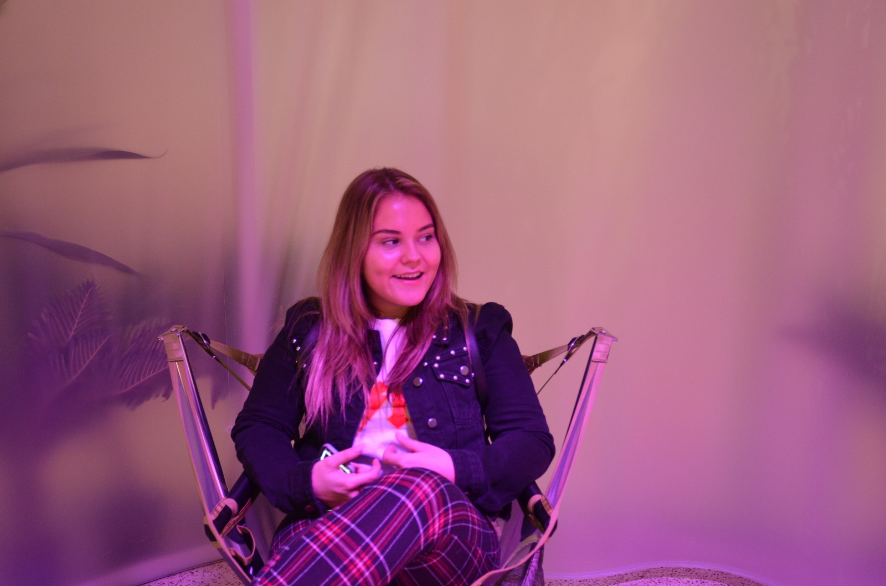
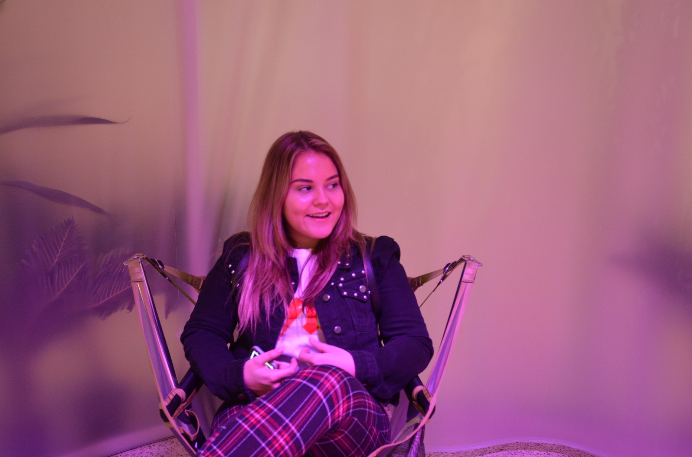

Trip to
London!
"In Februari zijn wij met de Minor naar London geweest om de
stad te herkennen, maar ook vooral de kennis die wij die afgelopen periode
opgedaan hadden, toe te passen in de praktijk.
Hiernaast hebben we verschillende musea's en andere bezienswaardigheden bezocht
en hebben we natuurlijk ook nog opdrachten voor school gemaakt. Zo hebben wij, net zoals in
Nederland, een typografie uit Engeland moeten onderzoeken en hebben wij een poster uit een
musea moeten onderzoeken op retorische elementen.
In mijn vrije tijd heb ik vooral geshopt, de brug bezocht, lekker uit eten geweest
met vriendinnen en heb ik vooral heel erg gelachen!""
 
